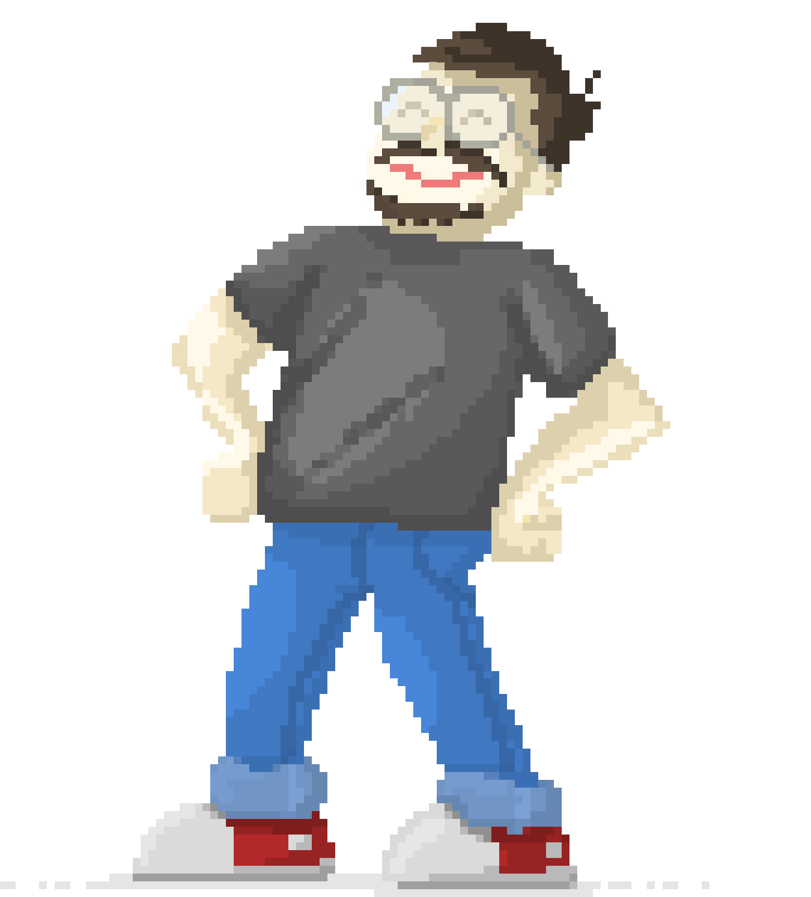

I'm a programmer, but I like to think of myself as a maker. I tremendously enjoy software development, experimenting with small projects and playing with random technologies. That is where this blog comes from.

I'm mostly a maker of a digital stuff, but I love bringing digital into the physical world. That includes pen plotting my generative art, tinkering with hobby electronics and crafts.
This is my longest living website/blog. It has been up since 2016 and I'm pretty proud how it evolved. I also fool around on CodePen and maintain a few npm packages. You can find me on GitHub or LinkedIn.
Work
I'm a Group Technology Director at Work & Co. Work & Co is a design and technology company, and we help our clients build digital products. I have personally lead the development track on multiple large scale projects. Mailchimp, TED, IKEA and IBM are just a few names on my personal client list.
Prior to Work & Co, I was a CTO at Null Object, small technology agency which I co-founded. We got acqui-hired and became Work & Co's Belgrade office in 2016.
Other
My other interests are music, craftsAmong other things I made my own electric guitar. and gaming. Old DOS games are what got me into the tech in the first place. I love indie games and I'm super happy that so many people are making them today. I'm also a terrible guitar player.
Nick Muffin Man comes from Frank Zappa's song of the same name.